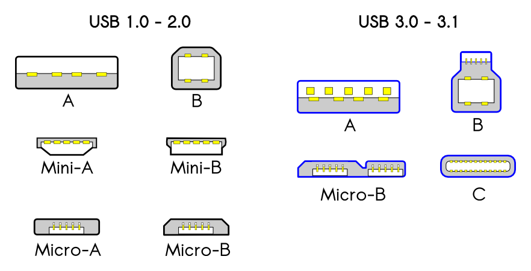
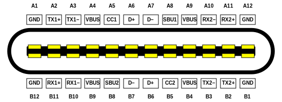

def i2c_read_reg(addr, reg, reg_size):
p.set32(base + REG_CTL, CTL_MTR | CTL_MRR)
p.write32(base + REG_SMSTA, 0xffffffff)
p.write32(base + REG_MTXFIFO, MTXFIFO_START | (addr << 1))
p.write32(base + REG_MTXFIFO, MTXFIFO_STOP | reg)
while not (p.read32(base + REG_SMSTA) & SMSTA_XEN):
pass
p.write32(base + REG_MTXFIFO, MTXFIFO_START | (addr << 1) | 1)
p.write32(base + REG_MTXFIFO, MTXFIFO_READ | MTXFIFO_STOP | reg_size + 1)
res = []
while len(res) < reg_size+1:
v = p.read32(base + REG_MRXFIFO)
if v & 0x100:
continue
res.append(v)
if res[0] < reg_size:
print("only read %d instead of %d bytes" % (res[0], reg_size))
return res[1:]
class R_USB2PHY_MISCTUNE(Register32):
APBCLK_GATE_OFF = 29
REFCLK_GATE_OFF = 30
class Usb2PhyRegs(RegMap):
USB2PHY_MISCTUNE = 0x1C, R_USB2PHY_MISCTUNE
class PhyTracer(ADTDevTracer):
REGMAPS = [
Usb2PhyRegs,
# ....
]
PhyTracer(hv, "/arm-io/atc-phy1", verbose=2).start()
# [cpu0] Pass: msr OSLAR_EL1, x31 = 0 (OK) (OSLAR_EL1)
# [cpu0] Shadow: mrs x12, MDSCR_EL1 = 0
# [cpu0] Skip: msr ACC_CFG_EL1, x13 = d
# [cpu0] PMGR R 28e0801d8+0:32 = 0xf0000ff -> 0xf0000ff
# [cpu0] PMGR R 28e0801f0+0:32 = 0xf0000ff -> 0xf0000ff
...
# [cpu0] CPUSTART W 28e0d4000+c:32 = 0x0
# [cpu0] CPUSTART W 28e0d4000+10:32 = 0x4
# [cpu0] Starting guest secondary 0:2:2
...
# [Dwc3Tracer@/arm-io/usb-drd1] MMIO: R.4 0xb0228cd3c = 0xfc00000
# [Dwc3Tracer@/arm-io/usb-drd1] MMIO: W.4 0xb0228cd3c = 0xfc00fc0
# [Dwc3Tracer@/arm-io/usb-drd1] MMIO: R.4 0xb0228cd40 = 0x3c20060c
# [Dwc3Tracer@/arm-io/usb-drd1] MMIO: W.4 0xb0228cd40 = 0x3c14060c
# [Dwc3Tracer@/arm-io/usb-drd1] MMIO: R.4 0xb0228cd40 = 0x3c14060c
curl https://alx.sh | sh
https://commons.wikimedia.org/wiki/File:USB_2.0_and_3.0_connectors.png

https://en.wikipedia.org/wiki/File:USB_Type-C_Receptacle_Pinout.svg
MMIO: R.4 PIPEHANDLER_AON_GEN = 0x1 (DWC3_FORCE_CLAMP_EN=0, DWC3_RESET_N=1)
MMIO: W.4 PIPEHANDLER_AON_GEN = 0x10 (DWC3_FORCE_CLAMP_EN=1, DWC3_RESET_N=0)
MMIO: R.4 USB2PHY_CTL = 0x4 (RESET=0, PORT_RESET=0, APB_RESETN=1, SIDDQ=0)
MMIO: W.4 USB2PHY_CTL = 0xb (RESET=1, PORT_RESET=1, APB_RESETN=0, SIDDQ=1)
MMIO: R.4 USB2PHY_MISCTUNE = 0x8c0013 (APBCLK_GATE_OFF=0, REFCLK_GATE_OFF=0)
MMIO: W.4 USB2PHY_MISCTUNE = 0x608c0013 (APBCLK_GATE_OFF=1, REFCLK_GATE_OFF=1)